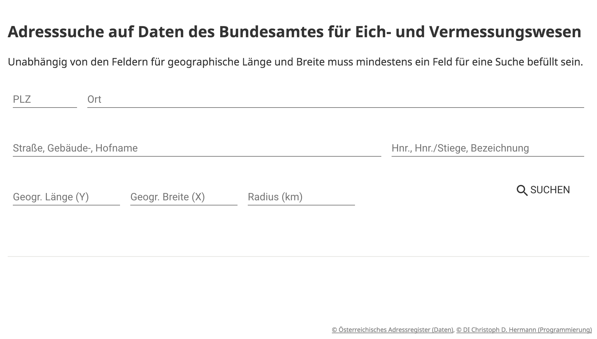
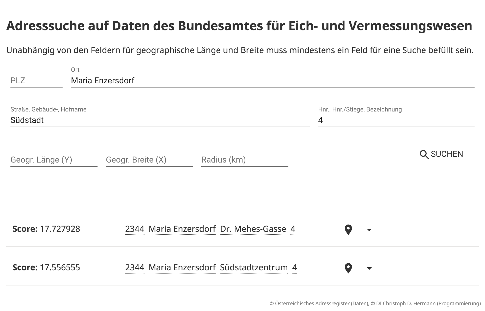
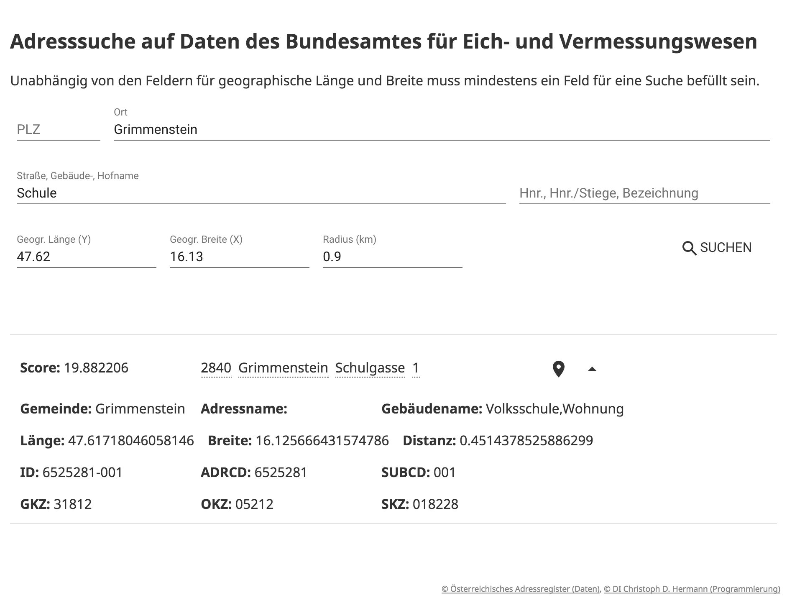
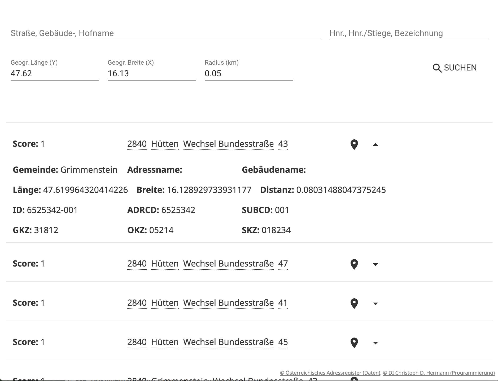
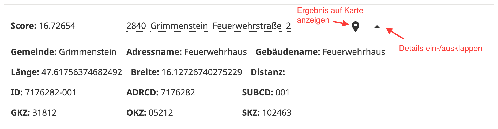
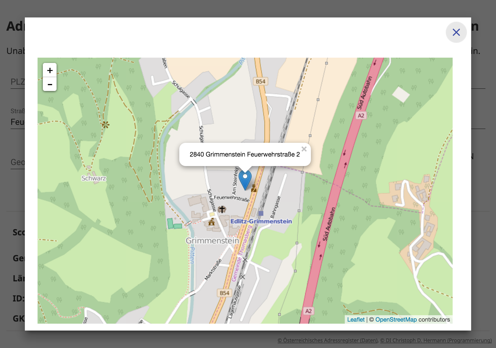

Dokumentation: Client für die BEV-Suche
Inhaltsverzeichnis
1 Benutzerdokumentation
1.1 Web-Oberfläche
Diese Web-Applikation ermöglicht das Durchsuchen von Adressdaten des Bundesamtes für Eich- und Vermessungswesen über Schnittstellen die über einen speziellen Suchdienst1 zur Verfügung gestellt werden. Es können sowohl Adressen die in ihrer Schreibweise einer Referenzadresse ähneln als auch Adressen in der Nähe zu bestimmten geograpischen Koordinaten gesucht werden.
Die Web-Applikation ist zur Nutzung auf stationären Arbeitsplätzen mit aktuellen Web-Browsern und Desktop-Monitoren ausgelegt. Es existiert jedoch eine rudimentäre Unterstützung für kleinere Displays wie z.B. Tablets.
1.1.1 Benutzeroberfläche
Die Benutzeroberfläche ist je nach Konfiguration unter
http://<Server>/bev-search-ui/ oder
https://<Server>/bev-search-ui/ erreichbar. Die
Benutzeroberfläche stellt sich beim Aufruf wie in der Abbildung
1 dar.

Abbildung 1: Benutzeroberfläche allgemein
Zur Suche muss mindestens ein Feld befüllt werden. Es empfiehlt sich aber so viele Felder wie bekannt zu füllen, um bessere Ergebnisse zu erhalten. Die Suche ist relativ resistent gegen ungenaue Schreibweisen. Besonders gute Resultate können erzielt werden, wenn zusätzlich zu der postalischen Adresse auch Koordinaten und ein Suchradius angegeben werden. Dann wird die Ähnlichkeitssuche bei Adressschreibweisen auf diese Region begrenzt.
Durch Betätigung der Eingabetaste (⏎) oder per Klick auf den
Suchen-Knopf wird die Suche ausgelöst. Während der Suche ändert
sich das Lupensymbol im Suchknopf. Dieses Symbol wird auch unter
der Eingabemaske dargestellt. Solange das Symbol angezeigt wird,
ist die Suche nicht abgeschlossen. Nachdem diese Symbol
ausgeblendet wird werden entweder die Suchergebnisse aktualisiert
oder links unten eine Fehlermeldung angezeigt.
Die Abbildung 2 zeigt die Benutzeroberfläche nach einer erfolgreichen Suche.

Abbildung 2: Benutzeroberfläche mit Ergebnissen
1.1.2 Suche nach ähnlichen Adressen
Für die Suche nach ähnlichen Adressen muss mind. 1 Feld abgesehen von Koordianten bzw. dem Radius ausgefüllt sein. Es empfiehlt sich möglichst viel bekannte Information anzugeben, um gute Ergebnisse zu erhalten.
Werden zusätzlich zu den Adressdaten auch Koordinaten und optional ein Suchradius angegeben, so erfolgt die Ähnlichkeitssuche nur in diesem geographischen Gebiet. Wird kein Radius angegeben, so wir von 0,5km ausgegangen.
Die Abbildung 3 zeigt so eine Suche mit geographischer Einschränkung.

Abbildung 3: Ähnlichkeitssuche mit geographischer Einschränkung
1.1.3 Suche nach Adressen in der Nähe
Werden ausschließlich Koordinaten und optional ein Radius angegeben, so werden die nächstgelegenen Adressen in ungefähr diesem Suchradius ausgegeben. Die Abbildung 4 zeigt so eine Umkreissuche.

Abbildung 4: Umkreissuche
1.1.4 Suchergebnisse
Egal ob eine Suche nach ähnlichen Adresse (siehe 1.1.2) oder nach geographischer Nähe (siehe 1.1.3) durchgeführt wird, die Darstellung bleibt immer die gleiche. Die Ergebnisse werden unterhalb der Eingabemaske für die Suchkriterien aufgelistet. Standardmäßig werden nur ein Messwert namens Score2, die Adresse ähnlich der in Österreich typischen Schreibweise sowie zwei Symbole angezeigt. Ein Klick auf das erste Symbol öffnet die Kartendarstellung (Abbildung 6). Ein Klick auf das zweite Symbol blendet Details zum Ergebnis ein oder aus (Abbildung 5).
Der Wert für Score kann und darf nicht als Prozentangabe oder ähnliches gewertet werden. Es besteht auch keine Vergleichbarkeit zwischen verschiedenen Suchanfragen.

Abbildung 5: Detailansicht eines Ergebnisses
Für Kartendarstellung (Abbildung 6) wird Kartenmaterial von https://www.openstreetmap.org/ geladen. Die Koordinaten für die Markierung und der Text stammen aus der BEV-Suche. Die Karte ist nur bedingt zur Darstellung in kleinen Browserfenstern bzw. auf kleinen Monitoren geeignet.

Abbildung 6: Kartenansicht
Damit die Ergebnisansicht übersichtlicher bleibt werden Details standardmäßig ausgeblendet und können bei Bedarf eingeblendet werden. Wenn an einer Ergebnisposition die Details eingeblendet sind, dann merkt sich das System dies für eine unmittelbar darauf folgende Suche. Somit kann man z.B. für das erste und gemäß Suchalgorithmus beste Ergebnis für aufeinanderfolgende Suchen die Details immer einblenden.
Durch Hinzufügen von weiteren Suchkriterien wird die Suche nicht zwingend weiter eingeschränkt. Für jede Kombination von Suchparametern wird eine andere optimierte Suche angestoßen. Somit kann z.B. eine Suche nach PLZ und Hausnummer weniger Ergebnisse liefern als eine Suche nach der gleichen PLZ, gleichen Hausnummer und einer zusätzlichen Straße.
1.2 Kommandozeilenprogramm
Über das Kommandozeilenprogramm kann die 1.3 einfach aufgerufen werden. Die Ergebnisdarstellung eignet sich zur weiteren Verwendung in Shell- oder BAT-Scripts.
usage: java -jar BevRestClient.jar [-a <arg>] [-h] [-i <arg>] [--latitude
<arg>] [--longitude <arg>] [-p <arg>] -r <URL> [--radius <arg>] [-s
<arg>] [-u] [-z <arg>]
-a,--address-line <arg> street or building name
-h,--help
-i,--house-id <arg> house id (e.g. 1/2 or 1 Obj. 7) or building
name
--latitude <arg> latitude of the search center (dot is decimal
comma)
--longitude <arg> longitude of the search center (dot is decimal
comma)
-p,--place <arg> place or municipaliy
-r,--rest-url <URL> URL to the ReST geocoding service
--radius <arg> search radius in km (dot is decimal comma)
-s,--separator <arg> the default field separator is the semi colon
-u,--unique-only print only unique results
-z,--postal-code <arg> postal code
Da für jeden Aufruf die ReST-Schnittstelle initialisiert, aufgerufen und ausgewertet werden muss, ist diese Methode nur bedingt zur Verarbeitung großer Datenmengen geeignet.
Ein dedizierter Client, welcher die ReST-Schnittstelle nutzt oder ein Erweiterungsmodul am Applikationsserver sind zur Verarbeitung großer Datenmengen besser geeignet.
1.3 ReST-Schnittstelle
Die ReST-Schnittstelle stellt 4 Enpunkte zur Verfügung. Mittels
derer werden die zwei Grundfunktion Geokodierung (Adresse zu
Koordinaten) und reverse Geokodierung zur Verfügung
gestellt. Jede der 2 Hauptfunktionen liefert das Ergebnis wahlweise
im Format at.itbh.bev.api.data.BevQueryResult oder
at.itbh.bev.api.data.AustrianCommonQueryResult. Details dazu
finden sich im Abschnitt 2.1.
Die Web-Oberfläche (Abschnitt 1.1) nutzt diese Schnittstelle und protokolliert die Such-URL bei reversen Geokodierungssuchen und die Suchparameter bei Geokodierungssuchen auf der Konsole des Web-Browsers.
Die Textbox 1 zeigt ein typisches
JSON-Antwortobjekt. Jedes Antwortobjekt gliedert sich in die drei
Teile request, response und status.
- status
- Enthält die Felder
code,messageundresponseType.codehat den Wert 0, wenn die Anfrage problemlos bearbeitet werden konnte. Werte ungleich 0 weisen auf einen Fehler hin. Ist ein Fehler aufgetreten, so kann im Feldmessageeine Fehlerbeschreibung enthalten sein. Das FeldresponseTypebeschreibt welche Daten mindestens in der Liste der Ergebnisse unterresponseenthalten sind. - request
- Enthält eine Zusammenfassung der Anfrageparameter
- response
- Enthält eine Liste von Antwortobjekten. Jedes
Antwortobjekt enthält ein Feld
score, welches eine Maßzahl für die Ähnlichkeit zwischen Anfrage und Antwort enthält. Das Felddistanceist gefüllt, wenn für das Antwortobjekt Koordinaten bekannt sind und in der Anfrage ebenso Koordinaten enthalten waren. Das Feldaddressenthält die tatsächlichen Adressdaten gemäßresponseType.
{
"request":{
"latitude":null,
"longitude":null,
"postalCode":"3202",
"place":"Grünau",
"addressLine":"Kirchenpl.",
"houseId":"3",
"radius":null
},
"response":[
{
"score":8.940395,
"distance":null,
"address":{
"id":"7323912-001",
"adrcd":"7323912",
"bestimmungsart":"Q",
"bestimmungsartGebaeude":"Q",
"eigenschaft":"01",
"epsg":"31256",
"epsgGebaeude":"31256",
"gemeindename":"Hofstetten-Grünau",
"gkz":"31909",
"gnradresse":"0",
"hauptadresse":"1",
"hausnrbereich":"keine Angabe",
"hausnrbuchstabe1":"",
"hausnrbuchstabe2":"",
"hausnrbuchstabe3":"",
"hausnrbuchstabe4":"",
"hausnrgebaeudebez":"",
"hausnrtext":"",
"hausnrverbindung1":"",
"hausnrverbindung2":"",
"hausnrverbindung3":"",
"hausnrzahl1":"3",
"hausnrzahl2":null,
"hausnrzahl3":null,
"hausnrzahl4":null,
"hofname":"",
"hw":"329312.69",
"hwGebaeude":"329312.69",
"objektnummer":"2178814",
"okz":"05468",
"ortsname":"Grünau",
"plz":"3202",
"quelladresse":"G",
"quelladresseGebaeude":"G",
"rw":"-61809.01",
"rwGebaeude":"-61809.01",
"skz":"048362",
"strassenname":"Kirchenplatz",
"strassennamenzusatz":"",
"subcd":"001",
"szusadrbest":"0",
"zaehlsprengel":"31909000",
"latitude":48.099264730065684,
"longitude":15.502287804265958,
"location":{
"latitude":48.099264730065684,
"longitude":15.502287804265958
},
"addressName":"",
"postalCode":"3202",
"municipality":"Hofstetten-Grünau",
"place":"Grünau",
"street":"Kirchenplatz",
"buildingName":"",
"houseNumber":3,
"houseNumberAddition":"",
"buildingId":"",
"houseId":"3",
"addressLine":"KirchenplatzKirchenplatzKirchenplatz"
}
}
],
"status":{
"code":0,
"message":null,
"responseType":"at.itbh.bev.api.data.BevQueryResult"
}
}
1.3.1 Ähnlichkeitssuche mit detaillierter Antwort
URL: /bev-search-rest/v1/at/geocode
Es werden ähnlich geschriebene Adressen gesucht.
Die Parameter werden als GET-Parameter in der URL
übergeben. Eine Beschreibung der Parameter findet sich in Tabelle
1. Abgesehen von latitude, longitude und
radius muss mind. ein Parameter übergeben werden.
Über diese URL werden Antworten vom Typ
at.itbh.bev.api.data.BevQueryResult geliefert.
| Parameter | Beschreibung |
|---|---|
postalCode |
Postleitzahl |
place |
Ort oder Gemeinde |
addressLine |
Üblicherweise ist dies der Straßenname. Da es nicht zwingend Straßennamen gibt, kann dies auch der Ortsname bei kleinen Dördern oder ein textuelle Bezeichnung für ein Gebäude (z.B. ein Hofname) sein. |
houseId |
Dies ist die Hausnummer inkl. einer weiteren Identifikation wie Stiege, Haus oder Objekt, etc. Wohnungsidentifikation werden nicht unterstützt. Beispiele: 1, 1a, 1-3, 1a-3b, 1 Stiege 3, 1 Strg. 3, 1 Obj, 4, 1b/4, etc. |
latitude |
Geographische Länge (GPS) eines Punktes auf der Landkarte zur Einschränkung der Suche auf ein Gebiet |
longitude |
Geographische Breites (GPS) eines Punktes auf der Landkarte zur Einschränktung der Suche auf ein Gebiet |
radius |
Suchradius in km (Dezimalzahlen mit Punkt als Komma erlaubt) um den Punkt auf der Landkarte (lieber etwas größer wählen, weil aufgrund von Verzerrungen bei der Kartenprojektion keine exakten Suchradien genutzt werden können.) |
Da es sich um GET-Parameter handelt, müssen diese stets URL-enkodiert sein. Groß- und Kleinschreibung beim Parameternamen wird unterschieden.
1.3.2 Ähnlichkeitssuche mit vereinfachter Antwort
URL: /bev-search-rest/v1/at/common/geocode
Diese URL entspricht in der Funktionalität der URL aus Abschnitt
1.3.1, wobei Resultate vom
Typ at.itbh.bev.api.data.AustrianCommonQueryResult geliefert
werden.
1.3.3 Positionssuche mit detaillierter Antwort
URL: /bev-search-rest/v1/at/geocode/{latitude}/{longitude}/{radius}
Es werden Adressen gesucht, die möglichst nahe der über die Parameter definierten GPS-Koordinaten innerhalb des Suchradius liegen. Die Ergebnisse sind nach ihrer Distanz zu den GPS-Koordinaten in aufsteigender Reihenfolge sortiert.
Es werden Resultate vom Datentyp
at.itbh.bev.api.data.BevQueryResult geliefert. Die Parameter
werden direkt in der URL übergeben (ohne geschweifte
Klammern). Das Dezimaltrennzeichen ist ein Punkt.
| Parameter | Beschreibung |
|---|---|
latitude |
geographische Länge (~ Y-Koordinate, Nordwert, Northing) |
longitude |
geographische Breite (~ X-Koordinate, Rechtswert, Easting) |
radius |
Suchradius in km. Den Radius lieber etwas größer wählen, weil aufgrund von Verzerrungen während der Kartenprojektion kein exakter Kreis garantiert werden kann. Dieser Parameter ist optinal und kann weggelassen werden. Die Standardeinstellung für den Suchradius beträgt 0.5km |
1.3.4 Positionssuche mit vereinfachter Antwort
URL: /bev-search-rest/v1/at/common/geocode/{latitude}/{longitude}/{radius}
Diese URL entspricht in der Funktionalität der URL aus Abschnitt
1.3.3, wobei Resultate vom Typ
at.itbh.bev.api.data.AustrianCommonQueryResult geliefert werden.
2 Technische Dokumentation
2.1 Systemarchitektur
Die gesamte Server-Applikation basiert auf der Java EE73 o Technologie und benötigt Java 84 und den Wilfly 105 Applikationserver. Als Datenbank kommt das Datenbanksystem H26 als eingebettete Datenbank zum Einsatz.
Die Applikation gliedert sich in 5 Module, welche als WAR-Archiv am Applikationsserver installiert sind. Durch die Modularität wird erreicht, dass unterschiedliche Clients an die Kernfunktion angebunden werden können.
- bev-search-api
- Die EJB3-Schnittstellendefinition für lokale Zugriffe.
- bev-search-core
- Implementiert die EJB3-Schnittstelle und stellt somit die Suchfunktion zur Verfügung. Die Suchfunktion wird mittels eines Lucene-Suchindex bereit gestellt. Dieser wird mittels Hibernat Search aus der H2-Datenbank berechnet. Die H2-Datenbank enthält die Daten des Bundesamtes für Eich- und Vermessungswesen. Die Daten dürfen darin nicht geändert werden, außer es werden neue BEV-Daten eingespielt.
- bev-search-rest
- Die Suchfunktion wird über eine ReST-Schnittstelle zur Verfügung stellt, welche ausschließlich per HTTP-=GET= Suchergebnisse liefert. Das Datenformat der Übermittlung ist JSON in UTF-8-Zeichenkodierung.
- bev-search-ui
- Die Benutzeroberfläche ist in Dart7 mit Polymer8
implemenentiert und nutzt die die ReST-Schnittstelle des
Moduls
bev-search-rest. - bev-search-rest-client
- Dieses Java-Kommandozeilenprogramm macht die ReST-Schnittstelle von der Kommandozeile aus nutzbar.
Weitere Schnittstelle wie z.B. SOAP oder EJB3 mit Remote-Interface oder ähnliches kann in dieser Architektur leicht hinzugefügt werden.
Die Antwort auf Suchanfragen wird in 2 Detaillierungsgraden zur Verfügung gestellt. Für Details zu den Antwortypen sei auf die Javadoc-Dokumentation verwiesen.
- at.itbh.bev.api.data.BevQueryResult
- Dieser Antworttyp liefert detaillierte Ergebnisse und weicht kaum von der Datenstruktur des BEV ab.
- at.itbh.bev.api.data.AustrianCommonQueryResult
- Dieser Antwortyp liefert Ergebnisse, welche der üblichen österreichischen Schreibweise für Adressen sehr ähnelt. Dabei geht jedoch Information aus dem BEV-Datebnmodell verloren.
Die Definition der Antworttypen definiert die Minimalanforderung an die zu retournierenden Datenfelder. Je nach Implementierung ist es möglich, dass auch zusätzliche Datenfelder geliefert werden. Die zusätzlichen Datenfelder sollen (dürfen) nicht verwendet werden, da es keine Garantie auf Korrektheit und Übereinstimmung mit den definierten Datenfeldern gibt.
Beispielweise nutzt die derzeitige ReST-Schnittstelle für beide Antworttypen das gleiche Antwortobjekt. Verlässlich sind aber nur die Informationen gemäß Antworttyp.
2.2 Kompilieren
Der Quellcode der Applikationskomponenten ist unter https://bitbucket.org/account/user/itbh/projects/BEV gespeichert und versioniert. Die gesamte Applikation ist in 3 Git-Repositiers untereilt:
- https://bitbucket.org/itbh/bev_server
- Die Komponenten, welche
mittels Java Technologien umgesetzt wurden. Die enthaltenen
Module sind
bev-search-api,bev-search-core,bev-search-rest,bev-search-rest-client. - https://bitbucket.org/itbh/bev_ui
- Die Benutzeroberfläche, welche mit Dart umgesetzt ist und als WAR-Archiv auf dem Applikationsserver installiert werden kann.
- https://bitbucket.org/itbh/bev_docs
- Anwenderdokumentation, Technische Dokumentation, Javadoc, Dartdoc
2.2.1 bev_server
Der Übersetzungsvorgang erfolgt unter Verwendung von Apache
Maven9. Die zentrale Steuerung des Kompiliervorgangs mit Ausnahme
des Kommandozeilenprogramms erfolgt über die pom.xml-Datei auf
oberster Verzeichnisebene. Das Kommandozeilenprogramm wird
ebenfalls mittels Apache Maven übersetzt. Die zugehörige
pom.xml-Datei befindet sich im Verzeichnis
bev-search-rest-client.
Die Verzeichnisse in diesem Respository sind allesamt Eclipse10-Projekte. Unter Nutzung der JBoss Tools11 in Eclipse können die Projekte ganz einfach übersetzt und auf einem Wilfly 10 Applikationsserver installiert werden.
2.2.2 bev_ui
Dieses Repository enthält ein Dart-Projekt in der
empfohlenen/benötigten Verzeichnisstruktur. Der
Übersetzungsvorgang wird mit dem Kommando pub build
gestartet. Das Verzeichnis web im Verzeichnis build muss
manuell in bev-search-ui.war umbenannt werden. Danach kann das
Verzeichnis bev-search-ui.war am Applikationsserver installiert
werden.
2.2.3 bev_docs
Das Verzeichnis javadoc enthält die Quellcode-Dokumentation der
Java-Komponentent. Das Verzeichnis dartdoc enthält die
Quellcode-Dokumentation der Dart-Komponenten. Das Verzeichnis
userdoc enthält diese Benutzerdokumentation.
2.3 Installation
Der Wildfly 10 Applikationsserver muss von der offiziellen Website herunter geladen und gemäß der offiziellen Dokumentation installiert werden.
Die Installation der Applikation erfolgt indem die jeweiligen
Module mit der Dateinamensendung .war bzw. .jar in das
deployments-Verzeichnis des Applikationsservers kopiert
werden. Für jedes Modul Modul muss eine weitere Datei names
<Modulname>.war.dodeploy angelegt werden. Sofern das
Auto-Deploy-Modul am Applikationsserver aktiv ist, werden die
Module installiert.
Für Details zum Installationsvorgang sei auf die Dokumentation des Wildfly-Applikationsservers verwiesen.
Bevor die Module installiert werden, muss der Applikationsserver entsprechend konfiguriert sein. Siehe dazu Abschnitt 2.4.
2.4 Konfiguration
Damit die Module installiert und genutzt werden können, müssen die folgenden Systemvariablen konfiguriert werden.
- hibernate.search.default.indexBase
- Das Verzeichnis in dem der Suchindex gespeichert werden soll. Der Applikationsserver benötigt in diesem Verzeichnis Schreibrechte.
- at.itbh.bev.csv.location
- Das Verzeichnis in dem die
CSV-Dateien und die beiden SQL-Scripts
import_data.sqlundprepare_data.sqlabgelegt sind. Die beiden SQL-Scripts befinden sich im Verzeichnisdatabaseim Repositorybev_server. Für dieses Verzeichnis reichen Leserechte. - at.itbh.bev.results.max
- max. Anzahl an Suchergebnissen pro Suche. 100 ist erfahrungsgemäß ein guter Wert.
- at.itbh.bev.results.prune
- Wenn
truewerden nur jene Ergebnisse deren Score im Vergleich zu den anderen Ergebnissen relativ eng beisammen liegen retourniert (2 aufeinanderfolgende Score-Differenzen dürfen sich nicht mehr als um das 1,9-fache unterscheiden). Wenn diese Heuristik aktiv ist, können sehr oft gute, eindeutige Adresszuordnungen erzielt werden.
Zur Konfiguration kann die Kommandozeilenschnittstelle
jboss-cli.sh bzw. jboss-cli.bat genutzt werden, indem die
folgenden Befehle ausgeführt werden. Die Platzhalter in den spitzen
Klammern müssen durch konkrete Werte ersetzt werden.
/system-property=at.itbh.bev.csv.location:add(value="<PATH COMES HERE>") /system-property=at.itbh.bev.results.max:add(value="<NUMBER>") /system-property=at.itbh.bev.results.prune:add(value="<BOOLEAN>") /system-property=hibernate.search.default.indexBase:add(value="<PATH COMES HERE>")
Die Datenbankkonfiguration erfolgt über die Datenquellen des Applikationsservers. Der folgendes Auszug beschreibt die benötigte Konfiguration, wobei der Pfad zur H2-Datenbank angepasst werden kann.
<datasource
jndi-name="java:jboss/datasources/at.itbh.bevDS"
pool-name="at.itbh.bev" enabled="true"
use-java-context="true">
<connection-url>
jdbc:h2:~/bev/bev;AUTOCOMMIT=FALSE;DB_CLOSE_ON_EXIT=FALSE;TRACE_LEVEL_FILE=3
</connection-url>
<driver>h2</driver>
<security>
<user-name>sa</user-name>
<password></password>
</security>
</datasource>
2.5 Datenimport
Die aktuellen CSV-Dateien müssen in das Verzeichnis
at.itbh.bev.csv.location kopiert werden. Danach löst ein Aufruf
der URL /v1/at/refresh/ den Aktualisierungsvorgang, welcher lange
dauern kann, aus. Zur Beschleunigung des Aktualisierungsvorganges
kann der Applikationsserver herunter gefahren, die Datenbankdatei
mit der leeren Datenbankdatei bev.mv.db.empty überschrieben, der
Applikationsserver wieder hochgefahren und die Aktualisierungs-URL
aufgerufen werden.
Während des Datenimports kann die Suchfunktion nicht genutzt werden, weil der Suchindex zerstört wird, um neu aufgebaut zu werden.
3 Lizenz
3.1 Daten
Für die Daten gilt die Lizenz des Bundesamters für Eich- und Vermessungswesen.
3.2 Applikation
Für die Applikation gilt die GNU Affero TODO
Fußnoten:
Dieser Suchdienst stammt von DI Christoph D. Hermann (http://www.itbh.at/) und arbeitet auf Daten des Bundesamtes für Eich- und Vermessungswesen. Das Bundesamt für Eich- und Vermessungswesen hat keinen Bezug zu diesem Suchdienst.
Unter Score wird eine Punktezahl verstanden, welche beschreibt wie gut das Suchergebnis zu der Anfrage passt. Je höher die Zahl, desto besser. Diese Punktezahl darf nicht Prozentangaben verwechselt werden. Es gibt keine max. mögliche Punktezahl. Ebenso sind die Punktezahlen zwischen zwei unterschiedlichen Suchen nicht vergleichbar.
TODO Maven
Eclipse
JBoss Tools